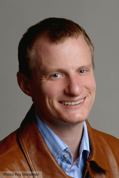

J. Christopher Anderson
Associate
Professor
Department of Bioengineering, UC Berkeley
JCAnderson at berkeley
dot edu
Affiliations
EBRC
SynBERC
Lawrence Berkeley
National Lab
Clotho Core Development Team
20n Labs
Synvivia
Research History and Current Interests
My
research interests are broad but all fit under the umbrella of Synthetic
Biology. My PhD research with Peter Schultz focused on the site-specific
incorporation of unnatural amino acids in living cells. This research was spun
out as the startup Ambrx which
develops site-specifically modified therapeutic proteins. In my postdoctoral
work with Adam Arkin and Chris Voigt I worked to
develop anti-cancer bacteria. I also began a foray into foundational tool
development with new standard assembly methods and a set of constitutive
promoter parts now referred to as the Anderson Promoter library, or J23100
series. In 2007, I began my UC Berkeley professorship continuing the
therapeutic bacteria work and expanding into foundational technologies.
Initially focused on automated assembly and selection methods for protein
engineering, I expanded into BioCAD tool development,
biosafety containment methods, amongst other new technologies. Some of this
work was done within the iGEM program, which I
mentored in the competition 8 times. In 2015 I went on leave for the startup
20n with DARPA and YCombinator support. For 2 years I
worked as a founder and CSO of 20n, which was a software
focused metabolic engineering company. We performed biochemical analyses to
other companies and DARPA, and developed chemical producing strains through
"lab in the cloud" outsourced experimentation. Much of this work
focused on producing acetaminophen biologically. In 2016, a graduate student,
Gabe Lopez, spun out a second YC company, Synvivia,
which is commercializing the synthetic auxotrophy
technology we developed at UCB. In 2017 I returned to UC Berkeley full time. My
current research consists of BioCAD tool development
to support a concurrent wetlab project to produce
gram quantities of unstudied biochemical products.
Opportunities for training
I
accept students, postdocs, and visiting scholars for research in computational
projects, wetlab, or combinations of the two. I accept
undergraduate and Master of
Engineering (MEng) students for training through
hands-on research experience-based courses (BioE 140L
and BioE 134) as well as independent and small group
projects (BioE 99, BioE
196, BioE 199, and BioE
H194).
BioE 134: Genetic Design
Automation
This software course is
taught at UC Berkeley in the Fall term. It is build around a series of 5 coding
projects for synthetic biology applications. It is divided into three sections. We begin with algorithms for designing
genetic engineering projects including CRISPR genome editing and multi-gene
operons. This is followed by algorithms to plan and manage
the DNA fabrication process in the wetlab and testing. Finally, we discuss algorithms for
describing the chemistry inside the cell, and the automated interpretation of
experimental data. This is an
advanced course, and it is highly recommended to take CS 61B as a
prerequisite. Specifically, the
course assumes you have basic knowledge of Java programming including classes
and inheritance, basic usage of Github, JUnit testing, and knowledge of big-O notation and data
structures. On the bio side, a
basic understanding of biochemistry and molecular biology is needed including
the central dogma, transcription, translation, enzymatic reactions, recombinant DNA technology. For students newer to programming but familiar
with the bio, a variation on this course is offered in the Fall
and Spring through independent studies.
BioE 140L: Synthetic
Biology Lab
This
wetlab and genetic design course is taught at UC
Berkeley in the Spring term and geared towards
comprehensive hands-on training in Synthetic Biology. It is intended for students with a basic
understanding of biochemistry and molecular biology as well as students with
previous molecular biology research experience. Through lectures, we go through the
different types of enzymes involved in genetic engineering, modern DNA
fabrication methods, methods of testing, directed evolution and combinatorial
library methods. In the wetlab portion of the course, students are trained on basic
pipetting technique and the execution of PCR, digestion, ligation, assembly,
transformation, miniprepping, and sequencing. Students
also perform a series of tutorials on how to design cloning experiments. We then
work on a real team project.
Students design and perform the experiments, and as a group we discuss
and make decisions about next steps.
Finally, there is an independent project at the end of the semester. Students will have a single 2 hour lecture and 6 hours of lab per week. Three of those 6 lab hours are in the
form of 3 one-hour wetlab sessions. These are conducted in small groups and
scheduled at the start of the semester.
The other three hours is for tutorials, design of cloning experiments,
analysis of sequencing data, and the independent project.
Education
§ 2014 Associate Professor, UC Berkeley, Department of
Bioengineering
§ 2007 Assistant Professor, UC Berkeley, Department of
Bioengineering
§ 2003-2007, Postdoctoral Fellow with Adam Arkin
(UC Berkeley) and Christopher Voigt (UCSF)
§ 2003, PhD, The Scripps Research Institute, Advisor Peter Schultz
§ 1998, BS, University of North Carolina at Chapel Hill
Honors and Awards
§ 2011 NSF CAREER Award
§ 2011 The International Genetically Engineered Machine (iGEM) Competition (Instructor):
§ Best Poster, Americas
§ 2009 The International Genetically Engineered Machine (iGEM) Competition (Instructor):
§ Best software award for tools team
§ 2008 The International Genetically Engineered Machine (iGEM) Competition (Instructor):
§ Finalist for wet team
§ Best software award for tools team
§ 2007 The International Genetically Engineered Machine (iGEM) Competition (Instructor):
§ Finalist
§ Best Poster Award
§ 2007 Technology Review TR35 Award
§ 2006 The International Genetically Engineered Machine (iGEM) Competition (Instructor):
§ 1st Place Best Part
§ 3rd Place Best Measurement and Part Characterization
§ 2006 Synthetic Biology 2.0: Best Application Award
§ 2003 Damon Runyon Cancer Research Foundation Postdoctoral
Fellowship
§ 1998-2001 NSF Graduate Research Fellowship
§ 1998 Venable Medal
§ 1996 Phi Beta Kappa
§ 1995 Phi Eta Sigma
§ 1995 Freshman Honors Program
§ 1994-1998 Dean’s List
Publications and Conference Papers
1. Raad M, Modavi
C, Sukovich DJ, Anderson JC. "Observing
Biosynthetic Activity Utilizing Next Generation Sequencing and the DNA Linked
Enzyme Coupled Assay" ACS Chem Biol. 2017 Jan 20;12(1):191-199
2. Lopez G, Anderson JC. "Synthetic Auxotrophs
with Ligand-Dependent Essential Genes for a BL21(DE3)
Biosafety Strain" ACS Synth Biol. 2015
3. Hsiau TH, Sukovich
DJ, Elms P, Prince RN, Strittmatter T, Ruan P, Curry B, Anderson P, Sampson J, Anderson JC.
"A method for multiplex gene synthesis employing error correction based on
expression" PLoS One. 10(3):e0119927,
2015.
4. Sukovich DJ, Modavi
C, de Raad M, Prince RN, Anderson JC. "A
DNA-Linked Enzyme-Coupled Assay for Probing Glucosyltransferase
Specificity" ACS Synth Biol. 2015
5. Galdzicki M, Wilson ML, Rodriguez
CA, Oberortner E, Pocock M,
Adam L, Anderson JC, Bartley BA, Beal J, Chandran D,
Chen J, Densmore D, Endy D,
Grünberg R, Hallinan J, Hillson NJ, Huang H, Johnson JD, Kuchinsky
A, Lux M, Misirli G, Myers CJ, Peccoud
J, Plahar HA, Roehner N, Sirin E, Stan G-B, Villalobos A, Wipat
A, Gennari JH, Sauro HM.
SBOL: A community standard for communicating designs in synthetic biology.
Nature Biotechnol.,
32:545-550, 2014.
6. Hsiau TH, Anderson JC. "The
Engineered DNA Sequence Syntax Inspector" ACS Synth. Biol. 2013
7. Xia Y, Diprimio N, Keppel TR, Vo B,
Fraser K, Battaile KP, Egan C, Bystroff
C, Lovell S, Weis DD, Anderson JC, Karanicolas J.
"The designability of protein switches by
chemical rescue of structure: mechanisms of inactivation and reactivation"
J. Am. Chem. Soc., 135(50):18840-9, 2013.
8. Oberortner, E., Bhatia, S., Densmore, D., Anderson, J. C. "Clotho
3.0: A Pattern-based Story on the Design of Clotho's
New Architecture" 19th Conference on Pattern Languages of Programs, 2012.
9. Huh, J., Kittleson, J. T., Arkin, A. P., Anderson, J. C. "Modular Design of a
Synthetic Payload Delivery Device" ACS Syn. Biol., 2(8):418-24,
2013.
10.
Leguia, M., Brophy, J., Densmore,
D., Asante, A., Anderson, J. C. "2ab assembly: a methodology for
automatable, high-throughput assembly of standard biological parts" J.
Biol. Eng. 7(1):2, 2013.
11.
Kittleson, J. T., DeLoache, W., Cheng, H-Y.
"Scalable Plasmid Transfer using Engineered P1-based Phagemids,"
ACS Syn. Biol., (12):583-9, 2012.
12.
Srivastava, S., Kotker, J., Hamilton, S., Ruan, P., Tsui, J., Anderson, J.
C., Bodik, R., Seshia, S.
A. "Pathway Synthesis using the Act Ontology", Fourth International
Workshop on Bio-Design Automation (IWBDA) 2012, San Francisco, June 2012.
13.
Kittleson, J. T., Wu, G. C., Anderson, J. C. "Successes and failures
in modular genetic engineering," Curr. Opin. Chem. Biol. 16(3-4):329-36,
2012.
14.
Kittleson, J. T., Cheung, S., Anderson, J. C. "Rapid optimization of
gene dosage in E. coli using DIAL strains," J. Biol. Eng. 5(1):10, 2011
15.
Leguia M, Brophy J, Densmore
D, Anderson JC. "Automated assembly of standard biological parts,"
Methods Enzymol. 498:363-97, 2011.
16.
Xia B, Bhatia S, Bubenheim B, Dadgar M, Densmore D, Anderson JC. "Developer's and User's Guide
to Clotho v2.0 A Software Platform for the Creation
of Synthetic Biological Systems," Methods Enzymol.
498:97-135, 2011.
17.
Bilitchenko, L, Liu, A., Cheung, S., Weeding, E., Xia, B., Leguia, M., Anderson, J. C., Densmore,
D. "Eugene – A Domain Specific Language for Specifying and
Constraining Synthetic Biological Parts, Devices, and Systems" PLoS One, 2011.
18.
Peccoud, J., Anderson, J. C., Chandran, D., Densmore, D., Galdzicki, M., Lux,
M. W., Rodriguez, C. A., Stan, G. B., Sauro, H. M.
"Essential information for synthetic DNA sequences," Nat Biotechnol., 29(1):22, 2011
19.
Densmore, D., Kittleson, J. T., Bilitchennko, L., Liu, A., Anderson, J. C. "Rule Based
Constraints for the Construction of Genetic Devices," IEEE International
Symposium on Circuits and Systems (ISCAS) 2010, Paris France, May 2010.
20.
Densmore, D., Hsiau T., Batten, C., Kittleson, J. T., DeLoache, W.,
Anderson, J. C. "Algorithms for Automated DNA Assembly" Nucleic Acids
Res.38(8):2607-16, 2010 available online.
21.
Anderson, J. C., Dueber, J. E., Leguia, M., Wu, G.
C., Goler, J. A., Arkin, A.
P., Keasling, J. D. "BglBricks:
A flexible standard for biological part assembly" J. Biol. Eng., 4:1,
2010 available online.
22.
Densmore, D., Anderson J. C., Combinational Logic Design in Synthetic
Biology, IEEE International Symposium on Circuits and Systems (ISCAS) 2009,
Taipei Taiwan, May 2009.
23.
Czar, M. J., Anderson, J.
C., Bader, J. S., Peccoud, J. "Gene synthesis
demystified" Trends in Biotechnology, 27(2):63-72,
2009.
24.
Anderson, J. C. "Cells
By Design" Technology Review, 2007.
25.
Guo, J., Wang, J., Anderson, J. C., Schultz, P. G. "Addition of
an Alpha Hydroxy Acid to the Genetic Code of
Bacteria" Angew. Chem. Int. Ed., 47(4) 722-725,
2007.
26.
Cropp, T. A., Anderson, J. C., Chin, J. W. "Reprogramming the
amino acid substrate specificity of orthogonal aminoacyl-tRNA-synthetases
to expand the genetic code of eukaryotic cells" Nat Protoc.
2(10):2590-600, 2007.
27.
Anderson, J. C., Voigt, C.
A., Arkin, A. P.“Environmental
signal integration by a modular AND gate” Mol. Sys. Biol., 3(133), Published
online: 14 August 2007.
28.
Anderson, J. C., Clarke, E.
J., Arkin, A. P., Voigt, C. A. “Environmentally
controlled invasion of cancer cells by engineered bacteria” J. Mol Biol., 355(4), 619-27, 2005.
29.
Anderson, J. C., Wu, N.,
Santoro, S. W., Lakshman, V, King, D. S., Schultz,
P.G. “An expanded genetic code with a functional quadruplet codon” Proc. Natl.
Acad. Sci. U. S. A., 101(20), 7566-71, 2004
30.
Santoro, S. W., Anderson,
J. C., Lakshman, V., Schultz, P. G. “An archaebacteria-derived glutamyl-tRNA
synthetase and tRNA pair
for unnatural amino acid mutagenesis in Escherichia coli” Nucleic Acids Res.,
31(23), 6700-9, 2003.
31.
Deiters, A., Cropp, T. A., Mukherji,
M., Chin, J. W., Anderson, J. C., Schultz, P. G. “Adding amino acids with novel
reactivity to the genetic code of Saccharomyces cerevisiae”
J. Am. Chem. Soc., 125(39), 11782-3, 2003.
32.
Chin, J. W., Cropp, T. A., Anderson, J. C., Mukherji,
M., Zhang, Z., Schultz, P. G. “An expanded eukaryotic genetic code” Science,
301(5635), 964-7, 2003.
33.
Anderson, J. C., Schultz,
P. G. “Adaptation of an orthogonal archaeal leucyl-tRNA and synthetase pair
for four-base, amber, and opal suppression” Biochemistry, 42(32), 9598-9608,
2003.
34.
Mehl, R. A., Anderson, J. C., Santoro, S. W., Wang, L., Martin, A. B.,
King, D. S., Horn, D. M., Schultz, P. G. “Generation of a bacterium with a 21
amino acid genetic code” J. Am. Chem. Soc., 125(4), 935-939, 2003.
35.
Anderson, J. C., Magliery, T. J., Schultz, P. G. “Exploring the limits of
codon and anticodon size” Chem. Biol., 9(2), 237-244, 2002.
36.
Magliery, T. J., Pastrnak, M., Anderson, J. C.,
Santoro, S. W., Herberich, B., Meggers,
E. L., Wang, L. & Schultz, P. G. “In vitro tools and in vivo engineering:
incorporation of unnatural amino acids into proteins” In Translation Mechanisms
(ed. J. Lapointe and L. Brakier-Gingras),
in press, 2001.
37.
Magliery, T. J., Anderson, J. C., Schultz, P. G. “Expanding the genetic
code: selection of efficient suppressors of four-base codons and identification
of "shifty" four-base codons with a library approach in Escherichia
coli” J. Mol. Biol., 307(3), 755-69, 2001.
38.
Betts, D., Johnson, T.,
Anderson, J. C., DeSimone, J. M. “Controlled radical
polymerization methods for the synthesis of non-ionic surfactants for CO2” Polym. Prepr.,
38(1), 760-761, 1997.
Patents
From PhD with Peter Schultz
1. Schultz, P. G., Wang, L., Anderson, J. C., Chin, J. W., Liu, D.
R., Magliery, T. J., Meggers,
E. L., Mehl, R. A., Pastrnak,
M., Santoro, S. W., Zhang, Z. “Methods and compositions for the production of
orthogonal tRNA-aminoacyl tRNA
synthetase pairs” US Patent 7,083,970, 2006.
2. Schultz, P. G., Wang, L., Anderson, J. C., Chin, J. W., Liu, D.
R., Magliery, T. J., Meggers,
E. L., Mehl, R. A., Pastrnak,
M., Santoro, S. W., Zhang, Z. “In vivo incorporation of unnatural amino acids”
US Patent 7,045,337, 2006.
Additional
patents are omitted for brevity including: US7527943B2, DK1456360T3,
AU2007251897B2, US7993872B2, US20060160175A1, US7527943B2, US8669073B2,
AU2002256292A1, US7794978B2, US8445446B2, AU2002256292C1, WO2009064416A2,
AU2013201487B2, AU2007251897B2, ES2348487T3
From 20n
1. Anderson, J. C., Srivastava, S., Daly,
M. T., Poon, P. , Revak, T.
“Biosynthetic production of acetaminophen, p-aminophenol, and p-aminobenzoic acid” US Patent US20170211104A1, 2017.
2. Anderson, J. C., Srivastava, S., Daly, M.
“Biosynthetic production of carnosine and beta-alanine” US Patent
US20170211105A1, 2017.
3. Anderson, J. C., Srivastava, S., Daly,
M. “Biosynthetic production of choline, ethanolamine, phosphoethanolamine,
and phosphocholine” US Patent US20170211103A1, 2017.
From UCB professorship
1. Anderson, J. C., Lopez, G. “Synthetic auxotrophs
with ligand dependent essential genes for biosafety” WIPO Patent
WO2016191757A1, 2016.
2. Anderson, J. C., Hsiau, T., Srivastava, S., Ruan, P., Prakash, J., Bodik, R., Seshia, S. A. “Method for Biosynthesis of Acetaminophen”
WIPO Patent WO2016069155A2, 2016.
3. Anderson, J. C., Sukovich, D. J., Modavi, C., De Raad, M. “Dna-linked enzyme-coupled assays” US Patent
US20170240952A1, 2017.
4. Anderson, J. C., Curry, B., Hsiau, T.
“One-pot multiplex gene synthesis” US Patent US20170218358A1, 2017.
5. Anderson, J. C., Hsiau, T., Srivastava, S., Ruan, P., Prakash, J., Bodik, R., Seshia, S. A. “Method for Biosynthesis of Acetaminophen” US
Patent US20170260555A1, 2017.
6. Anderson, J. C., Lopez, G. “Synthetic auxotrophs
with ligand dependent essential genes for biosafety” US Patent US20180155711A1,
2018.
7. Anderson, J. C., Lopez, G. “Synthetic auxotrophs
with ligand dependent essential genes for biosafety” European Patent
EP3303581A4, 2018.
8. Anderson, J. C., Lopez, G. “Synthetic auxotrophs
with ligand dependent essential genes for biosafety” Japanese Patent JP2018516568A,
2018.